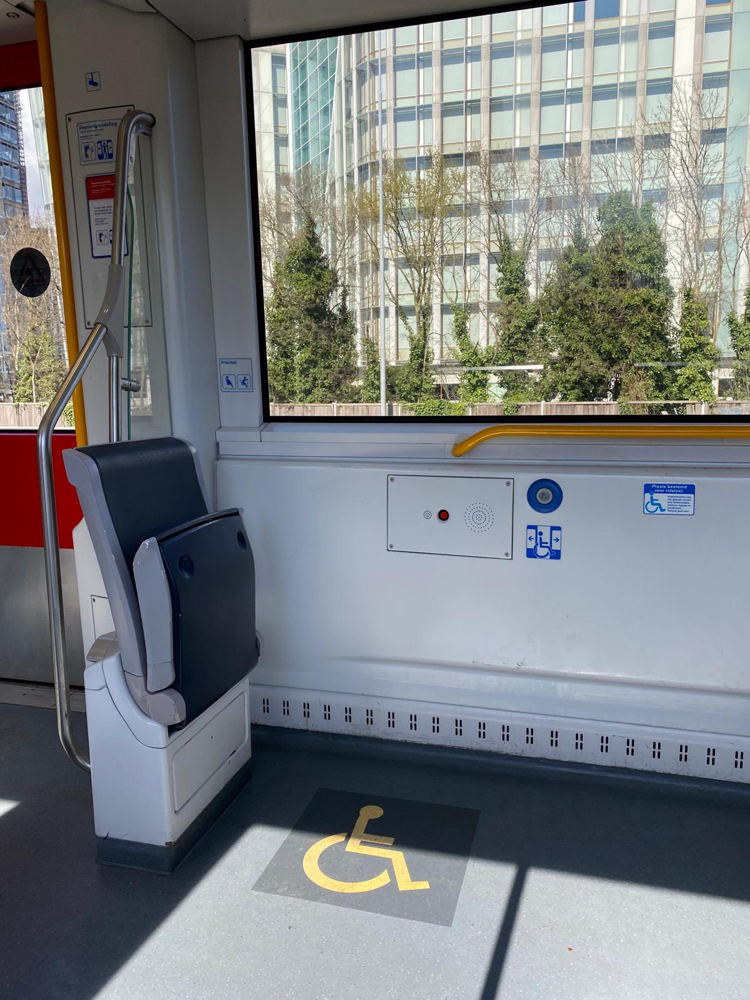

For travelers with limited mobility, Amsterdam offers a range of accessible public transport options to help you navigate the city with ease.
1. Wheelchair-Accessible Transport
All GVB trams, buses, and metro lines offer wheelchair accessibility, with dedicated spaces and ramps for easy boarding.
Trams: Most trams have low floors and spaces for wheelchairs. Trams on lines 3, 5, and 12 are particularly accessible.
Buses: All GVB buses are wheelchair accessible and have priority seating for passengers with mobility challenges.
Metro: Amsterdam’s metro stations, especially those on Line 52 (Noord/Zuidlijn), are fully accessible, with elevators and ramps for easy entry and exit.
2. Accessible Stations and Stops
Many tram, bus, and metro stops are designed with accessibility in mind, offering easy boarding platforms and elevators where necessary.
Amsterdam Central Station: Fully accessible with elevators, ramps, and accessible toilets.
Leidseplein and Museumplein Tram Stops: Both stops have raised platforms for easy boarding onto low-floor trams.
Metro Stations on Line 52: All stations are equipped with elevators and step-free access.
These stops provide convenient access to popular tourist attractions, including the Rijksmuseum, Anne Frank House, and Van Gogh Museum, while being fully accessible.

3. Assistance for Travelers with Limited Mobility
Travelers with mobility limitations can receive assistance at major stations. GVB personnel are available to help with boarding, luggage, or other needs.
In-Person Help: At stations like Amsterdam Central, Sloterdijk, and Zuid, staff are available to assist passengers with boarding and disembarking.
Contact GVB: You can contact GVB customer service at least 30 minutes before your trip to arrange assistance.
4. Accessible Ticketing Options
Travelers with limited mobility can easily purchase tickets through various accessible channels.
GVB Ticket Machines: Major stations are equipped with accessible ticket machines, featuring lower controls and large touchscreens.
Mobile App: Tickets can also be purchased through the GVB app, which is user-friendly and accessible for all.
5. Accessibility Map
GVB provides a map highlighting all accessible stations, stops, and routes throughout Amsterdam.
Why Use It? The map helps travelers plan their trip around accessible public transport options, ensuring a barrier-free experience.